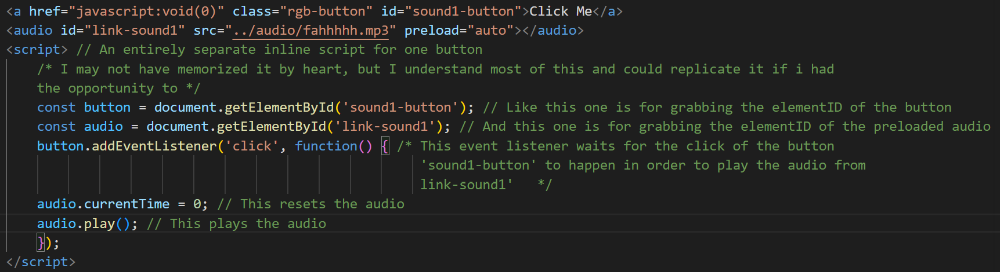
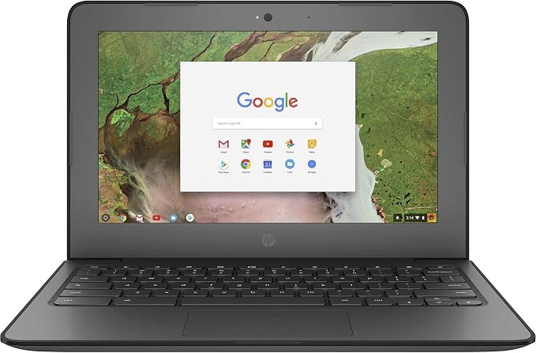
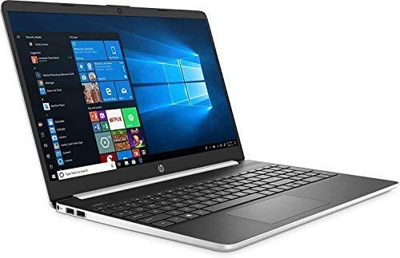
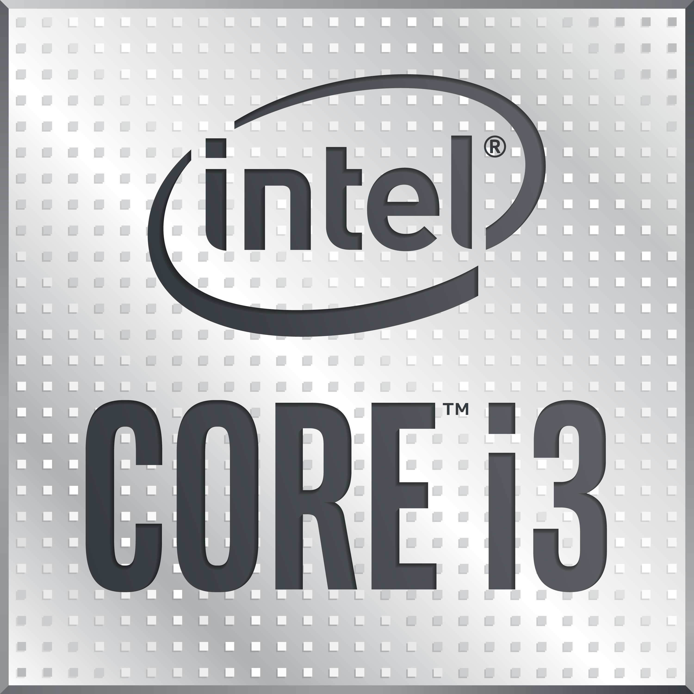

Rant
Now that you've made it to this page, I get to talk about whatever I want. Albeit my topics aren't that interesting, but I hope you
enjoy.
I'm always trying to learn coding, and one of the things I need to spend more time on is Javascript. I've used it before in programs like code.org's Javascript editor, but that doesn't count because:
- Code.org is a kids program
- The code and the assets are drag and drop
- Most of the code used is just custom functions anyway
G
o
o
g
l
e
. Whenever I would need help figuring out how to do something a specific way in VS code, I usually turn to Google if I can't think hard enough. At the same time however, I also know that I need to remember the information and actually understand it rather than relying on Google all the time. For example:That list from before? I didn't remember how to do it. Even after 2-3 hours of tutorials I still can't memorize every single tag and every single style attribute.
That's where intuition comes in.
After learning the basics, I always try to pull ideas and code from past projects and reference them in others to make sure those kinds of ideas are fresh in my mind. This kind of mindset keeps me going when I want to start a new project but don't know exactly where to start. By combining this mindset and the resources I have, I know that I can make a bunch of cool stuff.
Take Javascript for example. If I want to make something in my website like the button below interactable, that's entirely possible through searching it up on Google. If I want to modify how the code works however, I try not to use Google a second time, but rather troubleshoot it myself first.
Click Me
Even for the button above, I still had some troubleshooting to do. This was the code for reference:

Most of it was from Google, but I had to modify it a bit just to make the audio work.
And that's what I'm interested in working on too. I want to learn more about Javascript so that I can make whatever websites I make in the future actually work. There's the saying:
HTML is the skeleton, CSS is the appearance, and Javascript is the soul.
Each language represents the different parts of a website.
Without CSS or Javascript,
My website would look a lot more like this.
Boring Hyperlink
Yes I made this snippet myself
it's great that I've learned HTML and CSS a bit. But learning Javascript fully would be a huge accomplishment for me, since it allows for more potential in a website's interactivity. Then there's other programming languages that are more catered towards data science, like Python or Rust. I would also like to learn those languages, because computer science is more than just web development, it also delves into fields of software engineering and data science as well.
Now I'm done talking about the coding stuff, now I ask myself, how HAVE I been coding?
I've only ever been making websites on laptops for the past few years, and I've used a lot of programs up until now. VS Code has really been great for making websites, especially because of its live server extension features that allow me to view my website in real time as I'm editing.
The only thing is, I can't use the desktop version on a Chromebook, whether it be a school or personal Chromebook. VS Code has a web version, but it's really limited in features. The web version doesn't allow for live editing, meaning I have to manually open the file every time I save, and it was very slow on my Chromebook.
The desktop version is the one that has all the features. So I have to opt towards browser editors like W3Schools Try It Editor. Don't get me wrong, it's a good, free editor for what it has to offer, but since it was the first thing I found when I was looking for an HTML web browser editor, it was hard to switch, and I ended up being stuck using this website for the rest of the years to come.
To give you a perspective on what hardware I was using, I'll make a table featuring most of the laptops I've used and have been using for coding. Since I don't know how to make a table, I'll use Google for this one too, but I'll make my own changes.
 HP Chromebook 11 G6 EE |
 HP laptop 15-dy1058nr |
HP Omen Slim 16-an0934nr | |
|---|---|---|---|
| CPU | Intel Celeron N3350 (2 Cores, 2 Threads, 2.40GHz) |  Intel Core i3-1005G1 (2 Cores, 4 Threads, 3.40GHz) |
Intel Core Ultra 9 285H (16 Cores, 16 Threads, 5.40GHz) |
| GPU | Intel HD Graphics 500 (No VRAM, 2GB Shared RAM) | Intel UHD Graphics G1 (128MB VRAM, 4GB Shared RAM) |  Intel Arc 140T GPU (No VRAM, 16GB Shared RAM) OR Intel Arc 140T GPU (No VRAM, 16GB Shared RAM) OR NVIDIA GeForce RTX 5070 Laptop GPU (8GB VRAM, No Shared RAM) |
| RAM | 4GB DDR4 RAM | 8GB DDR4 RAM | 32GB DDR5 RAM |
| Storage | 32 GB EMMC Storage | 256 GB PCIe® NVMe™ M.2 SSD Storage | 2 TB PCIe® 4.0 NVMe™ M.2 SSD Storage |
| Comments | This 2020 Chromebook can't run anything, even after resetting it a ton. Even though it's got a good battery life, what good is that if it can't open more than 1 Chrome tab or a Google Doc. It can't run Scratch because it's hella laggy, and VS Code doesn't run smoothly on this thing either, which is expected for a 6 year old Chromebook. You can't store a lot of files on this laptop because it only has 32 GB of storage, and ChromeOS already uses up more than half of that storage for system files. Very unreliable overall. | The HP Laptop 15-dy1058nr is a much needed upgrade with double the RAM, 8x the storage, and a much better but still fairly old CPU. It can run VS code at a smooth pace, but try to open more programs and the whole system starts lagging. This laptop was not made for multitasking judging by the 2 cores it has similar to the Chromebook. You can store much more files on this laptop, and unlike the Chromebook, it actually runs a real operating system, meaning that light games will run smoothly on this laptop. | My current HP Omen 16 Slim was a much needed upgrade, with 64x more storage than the Chromebook, a much higher end CPU, an actual separate dedicated GPU with 8 GB VRAM to handle heavy AAA games, and 8x the amount of RAM as the Chromebook. This laptop is a beast at multitasking, it can run nearly anything smoothly with the 16 cores it has compared to the last laptops. You could open 50 chrome tabs, OBS Studio, Discord, and VS Code at the same time and the system would still be running smoothly. The 32 GB of RAM it comes with means that multitasking isn't a problem with this laptop. It comes with both an integrated GPU and a dedicated GPU, meaning that you can use your iGPU for light tasks while unplugged, and start utilizing your dGPU when plugged in for maximum gaming and multitasking performance. |
Finished reading? Click here:
Thank You